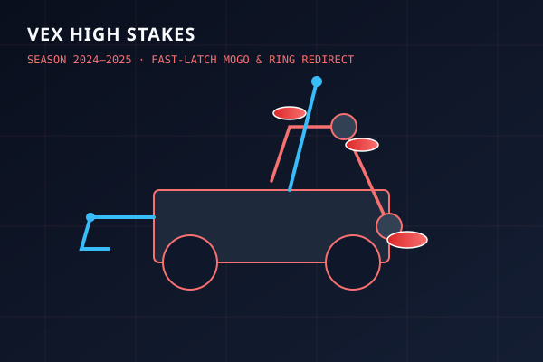
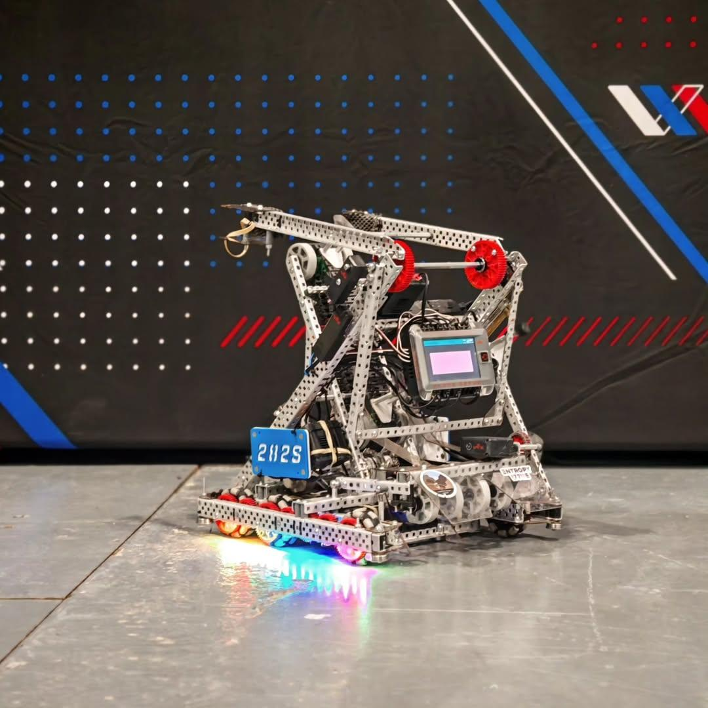

Continuous Ring Flow & Mobile Goal Management
High Stakes requires capturing mobile goals on the run, ingesting plastic ring elements, stacking them on goal posts, placing bonus rings on neutral wall stakes, and ascending a central pyramid ladder.
Engineered a self-centering pneumatic clamp and a floating belt intake featuring compliant 3D-printed TPU fingers and optical color sensors to automatically eject opponent rings in under 15ms.
CORE SUBSYSTEMS
- Pneumatic Mogo Clamp: Self-centering chamfered jaws with toggle linkage locking upon impact.
- Two-Stage Ring Intake: Floating top roller assembly with polyurethane O-ring drive belts.
- Active Color Sorter: High-speed optical sensor triggering pneumatic divert gate to reject opposing rings.
- Wall Stake Arm: High-gear-ratio compound pivot scoring top-tier neutral wall stakes.
Design Evolution: V1 Baseline vs V2 Subsystem Refinements Rebuild
The overarching robot chassis architecture remained fundamentally robust across the season; the major rebuild focused on systematic subsystem redesigns: compliant 3D-printed intake interfaces, active optical sorting gates, and chamfered clamp kinematics.
Initial build proved the multi-subsystem integration: rear mogo clamp, continuous conveyor belt intake, compound pivot arm, and high hang ladder hooks.

- Rigid Intake Bounce: Plastic ring elements bounced off rigid intake plates during high-speed drive approaches, dropping intake rate to ~78%.
- Manual Color Sorting: Ingesting opponent rings into the conveyor required manual driver reversal, costing precious match seconds.
- Alignment Sensitivity: Standard rear clamp jaws required strict perpendicular alignment to latch onto mobile goals cleanly.
- Intake Geometry: Rigid aluminum channel backing.
- Color Filtering: Manual driver reaction.
- Clamp Lead-ins: Unchamfered aluminum plates.
- Wall Stake Scorer: Fixed torque pivot.
Executed an intensive subsystem redesign: integrated compliant 3D-printed TPU flexible intake fingers, a two-stage floating top-roller belt, closed-loop optical color sorting with pneumatic redirect divert gate, and self-centering clamp lead-ins.

- Compliant TPU Intake Fingers: 3D-printed flexible TPU spools flex around ring deformities, creating instant positive friction grab.
- Automated Optical Color Redirect: V5 optical sensor triggers high-speed pneumatic divert gate in < 15ms, ejecting opponent rings automatically.
- Self-Centering Clamp Jaws: Chamfered guide ramps capture and center mobile goals from approach angles up to ±25°.
- Intake Success Rate: 78% → 99% at 400 RPM continuous drive speeds.
- Opponent Ring Rejection: 100% automated without driver intervention.
- Mogo Latch Time: Sub-0.2s from any approach angle.
- Ladder Climb: Reliable Tier 3 lock in 2.5s.